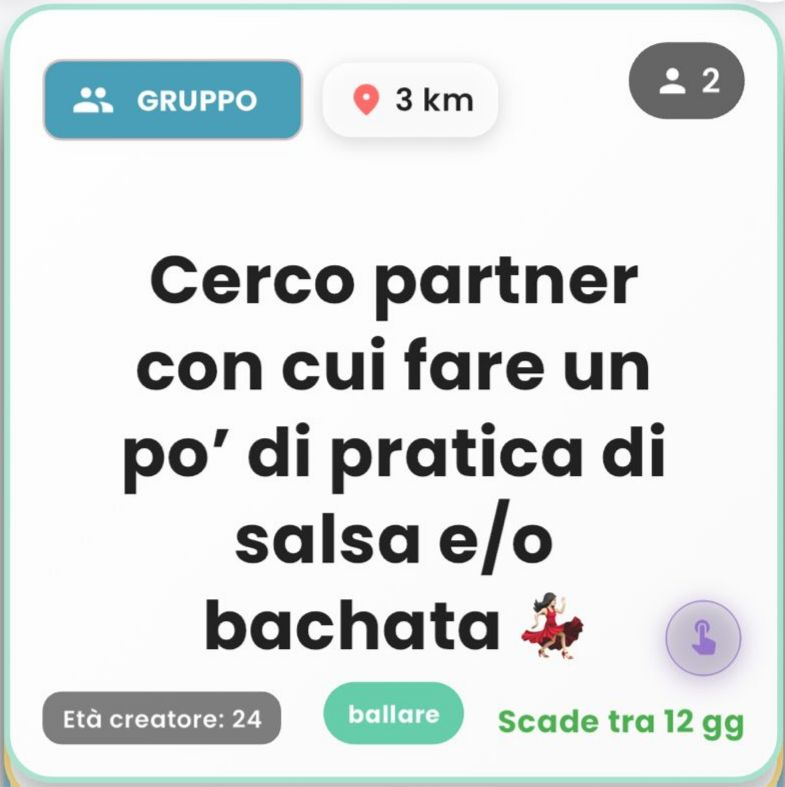
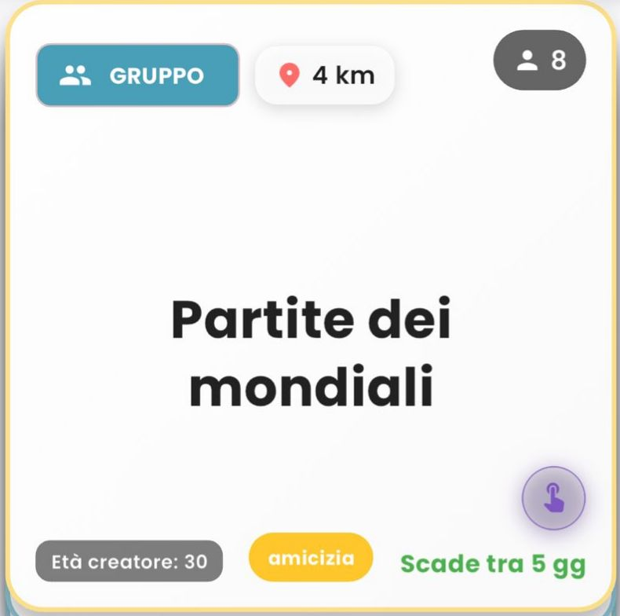
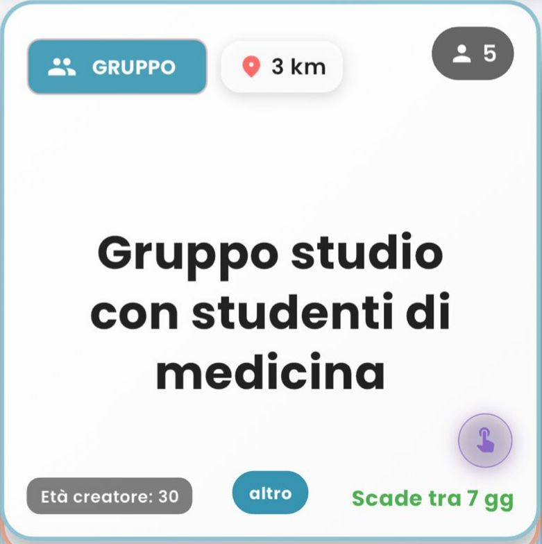
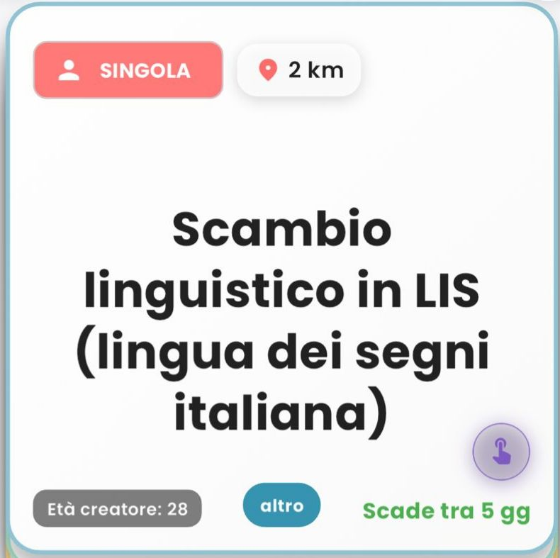

Come funziona Wimii
Trovi iniziative create da altri, scegli con uno swipe e organizzate tutto in chat. In pochi tap.
Sfoglia e scegli con uno swipe
Ti proponiamo iniziative di altri utenti, singole o di gruppo. Scorri a destra se ti interessa, a sinistra per passare alla prossima.
Chi ha creato l'iniziativa riceve il tuo interesse, vede il tuo profilo e decide se accettarti.




Vieni accettato? Si parte
Lo capisci già dalla card, prima ancora di mettere like: se è singola o di gruppo, la distanza, la categoria e quante persone. Così sai cosa ti aspetta.
Iniziativa singola
Si apre una chat uno-a-uno con il creatore. La conversazione può iniziarla chiunque dei due.
Iniziativa di gruppo
Entri nella chat di gruppo con tutti i partecipanti per organizzare l'uscita insieme.
Hai un'idea? Creala tu
Crea la tua iniziativa dalla schermata apposita: una breve descrizione e scegli a quante persone è rivolta — singola o di gruppo. Al resto pensa Wimii.
Domande veloci
Quanto costa?
Niente: Wimii è completamente gratuita.
Devo creare iniziative?
No. Puoi anche solo partecipare a quelle degli altri, quando ti va.
È anonimo?
Sì. Chi crea un'iniziativa resta anonimo: il suo profilo si scopre solo dopo che ha accettato le persone, e solo a loro.
Hai sempre il controllo
Wimii è pensata perché tu stia tranquillo.
Qualcuno è inopportuno?
Lo segnali o lo blocchi in un tap: gli account scorretti vengono rimossi e non vi vedrete più le iniziative.
Vuoi lasciare una chat?
Esci quando vuoi, in qualsiasi momento. Senza complicazioni.